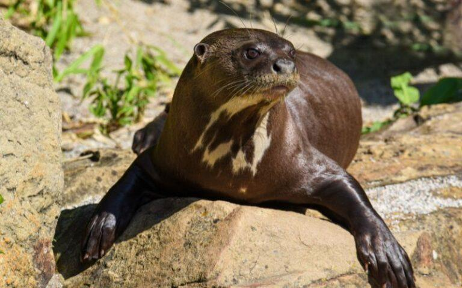
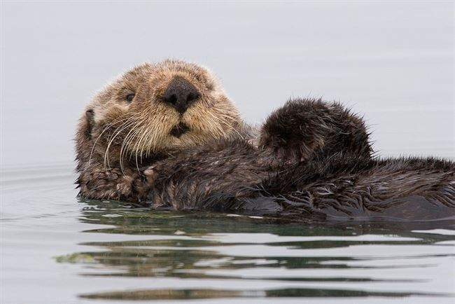
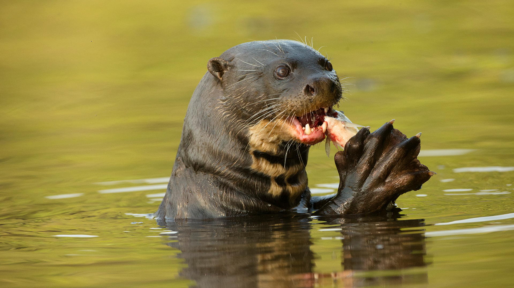
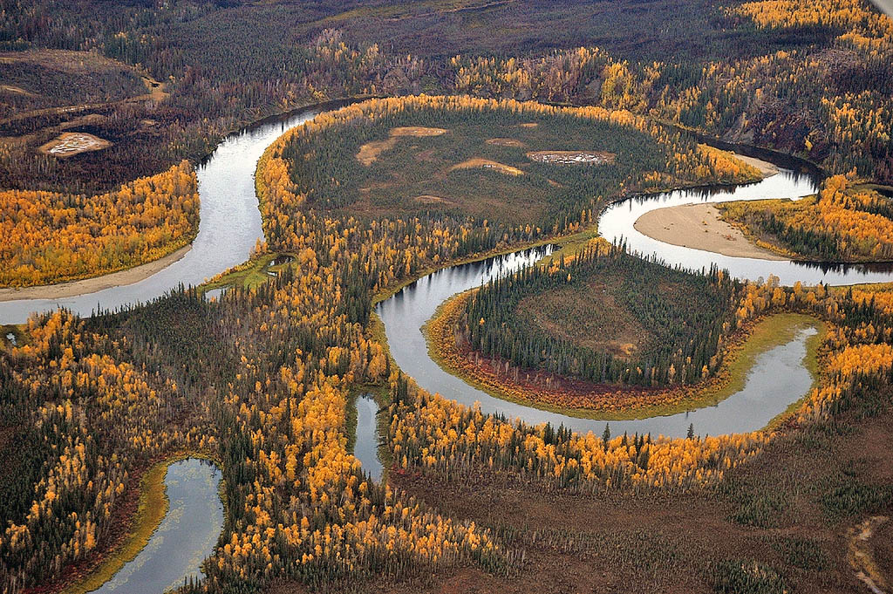
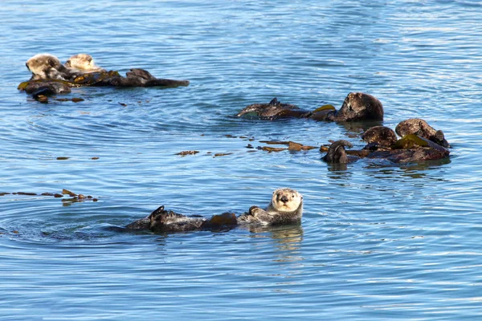

ÍNDICE
ESPECIES DE NUTRIAS
Nutria Gigante

La más grande de todas, puede medir hasta 1.8 metros.
Nutria Marina

Vive en el Pacífico Norte y usa piedras para romper almejas.
Nutria de Río

Habita en ríos de agua dulce en América del Sur.
HÁBITATS
Ríos y Lagos

Las nutrias prefieren aguas limpias con vegetación densa en las orillas.
Costas Marinas

La nutria marina vive en aguas costeras del Pacífico Norte.
CURIOSIDADES
- Las nutrias tienen la piel más densa del reino animal (hasta 1 millón de pelos por pulgada)
- Usan piedras como herramientas para abrir moluscos
- Son muy juguetonas y se deslizan por el barro y la nieve
- Pueden cerrar sus oídos y fosas nasales cuando están bajo el agua
- Duermen flotando boca arriba y se agarran de las patas para no separarse